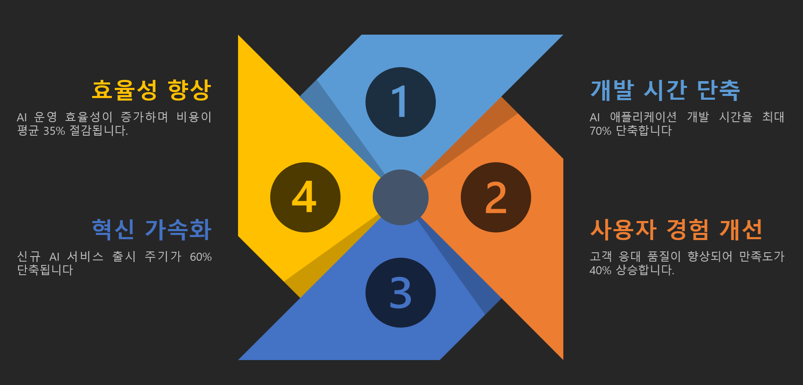
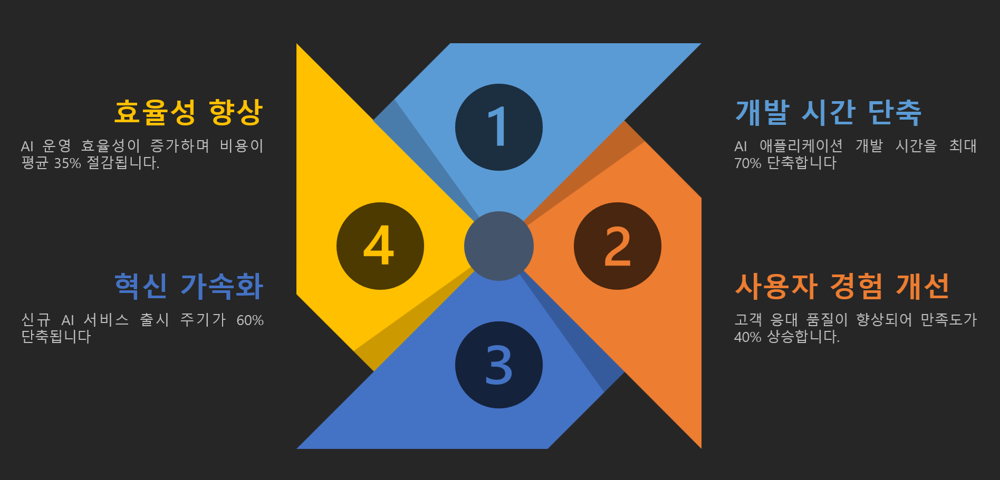

Dify.ai

도입 배경
AI 기술 발전
생성형 AI 기술이 급속도록 발전하며 경쟁 우위 확보를 위한 필수 요소가 되었습니다.
시스템 통합 필요
기존 비즈니스 시스템과 AI솔루션의 원활한 통합이 필요합니다.
효율적 운영 요구
다양한 AI 모델을 효율적으로 관리하고 운영할 방법이 필요합니다.
도입 기대 효과

생성형 AI 기술이 급속도록 발전하며 경쟁 우위 확보를 위한 필수 요소가 되었습니다.
기존 비즈니스 시스템과 AI솔루션의 원활한 통합이 필요합니다.
다양한 AI 모델을 효율적으로 관리하고 운영할 방법이 필요합니다.
